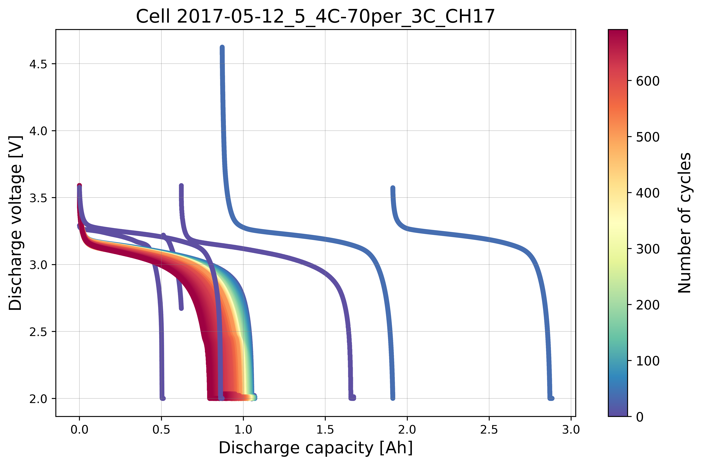
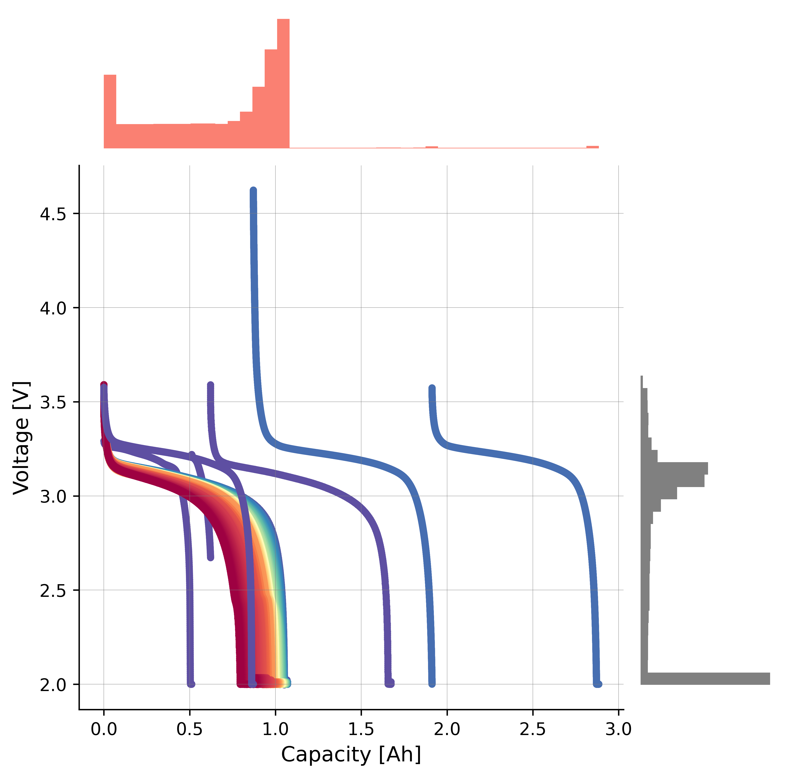
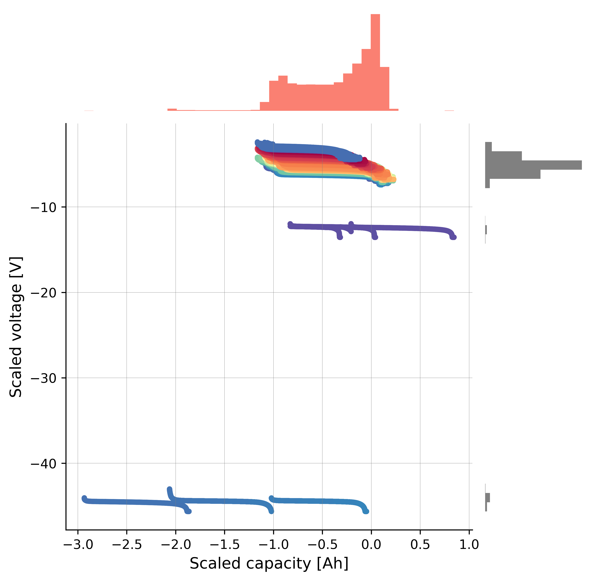
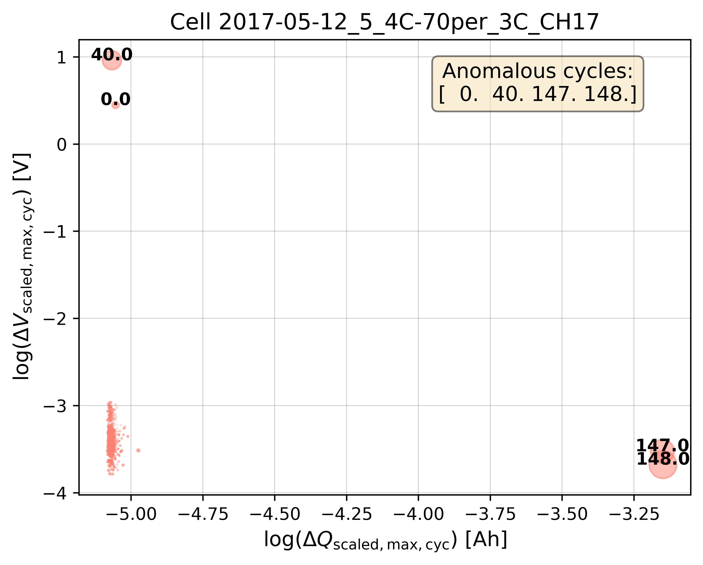
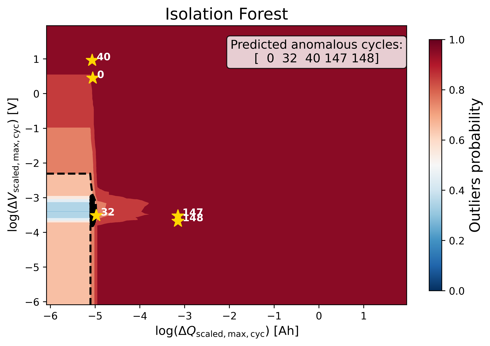
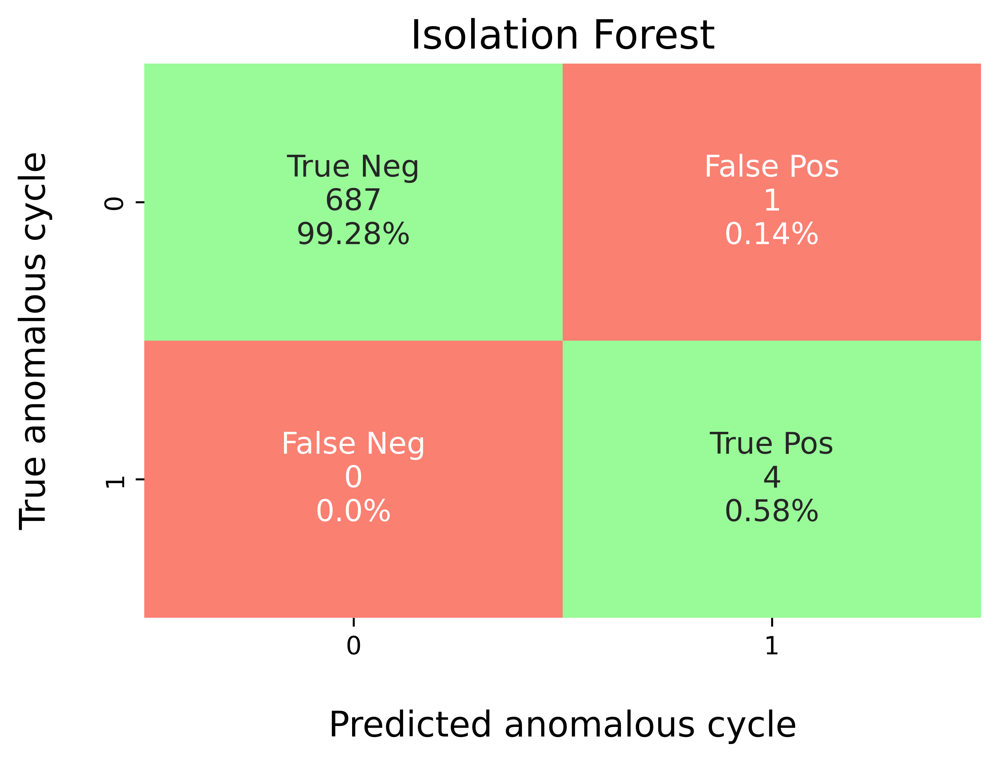

Example (1): Baseline Isolation Forest without Hyperparameter Tuning¶
Prerequisites¶
Python 3.12 (recommended)
Files on disk:
database/train_dataset_severson.db(benchmark labels per cycle)
(Optional) LaTeX installation if you want Matplotlib to render text with LaTeX:
A TeX distribution (e.g., TeX Live/MacTeX/MiKTeX), dvipng, and fonts like cm-super.
Don’t have LaTeX installed? Either install it, or set
rcParams["text.usetex"] = False.
Before running the example in the machine_learning/baseline_models
section, please evaluate whether the global directory path specified in
src/osbad/config.py needs to be updated:
# Modify this global directory path if needed
PIPELINE_OUTPUT_DIR = Path.cwd().joinpath("artifacts_output_dir")
The following example of running a baseline Isolation Forest model (without
hyperparameter tuning) is also provided as a notebook in
machine_learning/baseline_models/severson_data_source/ml_01_iforest_baseline_severson.ipynb.
Step-1: Load libraries¶
Import the libraries into your local development environment, including the
osbad library for benchmarking anomaly detection.
Pathis used for robust, cross-platform file paths.pprintpretty-prints data structures for readable diagnostics.duckdbis the embedded analytical database engine storing the dataset.optunais a hyperparameter optimization framework (available for later tuning workflows).bconf: project config utilities (e.g., where to write artifacts).BenchDB: a thin layer around DuckDB that provides convenience loaders.CycleScaling: implements the statistical feature transformation methods for scaling cycle data.ModelRunner,hp,modval,bviz: modeling, hyperparameters, model validation, and visualization helpers for the benchmarking study.
# Standard library
from pathlib import Path
import pprint
# Third-party libraries
import duckdb
import pandas as pd
import matplotlib as mpl
import matplotlib.pyplot as plt
import numpy as np
import optuna
# Custom osbad library for anomaly detection
import osbad.config as bconf
import osbad.hyperparam as hp
import osbad.modval as modval
import osbad.viz as bviz
from osbad.database import BenchDB
from osbad.scaler import CycleScaling
from osbad.model import ModelRunner
Step-2: Load Benchmarking Dataset¶
Define the path to the DuckDB database file using the
DB_DIRfrombconf.Create a DuckDB connection (read-only) and load the full training dataset from the
df_train_dataset_svtable.Retrieve the unique cell indices available in the training dataset.
# Path to database directory
DB_DIR = bconf.DB_DIR
db_filepath = DB_DIR.joinpath("train_dataset_severson.db")
# Create a DuckDB connection
con = duckdb.connect(
db_filepath,
read_only=True)
# Load all training dataset from duckdb
df_duckdb = con.execute(
"SELECT * FROM df_train_dataset_sv").fetchdf()
# Get the cell index of training dataset
unique_cell_index_train = df_duckdb["cell_index"].unique()
print(f"Unique cell index: {unique_cell_index_train}")
Step-3: Filter Dataset for a Selected Cell¶
Pick a specific cell based on
selected_cell_label, which identifies the experimental data corresponding to one unique cell.Create an artifacts folder for that cell, where you can save figures, tables, or model outputs related to this cell.
Filter the loaded dataset for the selected cell only and extract the ground-truth outlier cycle indices.
# Get the cell-ID from cell_inventory
selected_cell_label = "2017-05-12_5_4C-70per_3C_CH17"
# Create a subfolder to store fig output
# corresponding to each cell-index
selected_cell_artifacts_dir = bconf.artifacts_output_dir(
selected_cell_label)
# Filter dataset for specific selected cell only
df_selected_cell = df_duckdb[
df_duckdb["cell_index"] == selected_cell_label]
# Anomalous cycle has label = 1
# Normal cycle has label = 0
# true outliers from benchmarking dataset
df_true_outlier = df_selected_cell[
df_selected_cell["outlier"] == 1]
# Get the cycle index of anomalous cycle
true_outlier_cycle_index = (
df_true_outlier["cycle_index"].unique())
Step-4: Drop True Labels¶
Drop the true outlier labels (denoted as
outlier) from the dataframe and select only the relevant features for machine learning:cell_index: The cell-ID for data and model versioning purposes.cycle_index: The cycle number of each cell.discharge_capacity: Discharge capacity of the cell.voltage: Discharge voltage of the cell.
Initialize
BenchDBfor the selected cell and load the benchmarking dataset from the training partition.Extract the true outlier cycle indices for later evaluation.
# Import the BenchDB class
# Load only the dataset based on the selected cell
benchdb = BenchDB(
db_filepath,
selected_cell_label)
# load the benchmarking dataset
df_selected_cell = benchdb.load_benchmark_dataset(
dataset_type="train")
if df_selected_cell is not None:
filter_col = [
"cell_index",
"cycle_index",
"discharge_capacity",
"voltage"]
# Drop true labels from the benchmarking dataset
# and filter for selected columns only
df_selected_cell_without_labels = benchdb.drop_labels(
df_selected_cell,
filter_col)
# Extract true outliers cycle index from benchmarking dataset
true_outlier_cycle_index = benchdb.get_true_outlier_cycle_index(
df_selected_cell)
Step-5: Plot Cycle Data without Labels¶
Visualize the cycling data for the selected cell without displaying the true outlier labels. This represents what the model sees before training.
# Plot cell data with true anomalies
# If the true outlier cycle index is not known,
# cycling data will be plotted without labels
benchdb.plot_cycle_data(
df_selected_cell_without_labels)
output_fig_filename = (
"cycle_data_nolabel_"
+ selected_cell_label
+ ".png")
fig_output_path = (
selected_cell_artifacts_dir
.joinpath(output_fig_filename))
plt.savefig(
fig_output_path,
dpi=600,
bbox_inches="tight")
plt.show()
{kind=link}

Step-6: Statistical Feature Transformation¶
To help separate abnormal cycles from normal cycles, a statistical feature transformation method is applied using the median and IQR of the input features:
where the IQR can be calculated from the third (75th percentile) and first quartile (25th percentile) of the input vector (\(\textrm{IQR}(X) = Q_3(X) - Q_1(X)\)). Here, \(\textrm{median}(X)^2\) preserves the physical unit of the original feature after transformation. Feature scaling is implemented on both the capacity and voltage data.
Capacity scaling¶
# Instantiate the CycleScaling class
scaler = CycleScaling(
df_selected_cell=df_selected_cell_without_labels)
# Implement median IQR scaling on the discharge capacity data
df_capacity_med_scaled = scaler.median_IQR_scaling(
variable="discharge_capacity",
validate=True)
# Plot the histogram and boxplot of the scaled data
ax_hist = bviz.hist_boxplot(
df_variable=df_capacity_med_scaled["scaled_discharge_capacity"])
ax_hist.set_xlabel(
r"Discharge capacity [Ah]",
fontsize=12)
ax_hist.set_ylabel(
r"Count",
fontsize=12)
output_fig_filename = (
"cap_scaling_"
+ selected_cell_label
+ ".png")
fig_output_path = (
selected_cell_artifacts_dir
.joinpath(output_fig_filename))
plt.savefig(
fig_output_path,
dpi=600,
bbox_inches="tight")
plt.show()
Voltage scaling¶
# Implement median IQR scaling on the discharge voltage data
df_voltage_med_scaled = scaler.median_IQR_scaling(
variable="voltage",
validate=True)
# Plot the histogram and boxplot of the scaled data
ax_hist = bviz.hist_boxplot(
df_variable=df_voltage_med_scaled["scaled_voltage"])
ax_hist.set_xlabel(
r"Scaled voltage [V]",
fontsize=12)
ax_hist.set_ylabel(
r"Count",
fontsize=12)
output_fig_filename = (
"voltage_scaling_"
+ selected_cell_label
+ ".png")
fig_output_path = (
selected_cell_artifacts_dir
.joinpath(output_fig_filename))
plt.savefig(
fig_output_path,
dpi=600,
bbox_inches="tight")
plt.show()
Scatter histogram¶
Create a scatterplot with histograms to display the distribution for the x-axis and y-axis:
The salmon color corresponds to the x-axis (
discharge_capacity).The grey color corresponds to the y-axis (
voltage).
axplot = bviz.scatterhist(
xseries=df_selected_cell_without_labels["discharge_capacity"],
yseries=df_selected_cell_without_labels["voltage"],
cycle_index_series=df_selected_cell_without_labels["cycle_index"])
axplot.set_xlabel(
r"Capacity [Ah]",
fontsize=12)
axplot.set_ylabel(
r"Voltage [V]",
fontsize=12)
plt.show()
Before applying the scaling transformation, the scatterplot with histograms shows that the anomalous cycles are closely clustered with the normal cycles, making it difficult for the model to learn a clear decision boundary. After applying the scaling transformation, the anomalous cycles are more separated from the normal cycles, which can help the model to better identify the anomalies.
{kind=link}

After applying the scaling transformation:
axplot = bviz.scatterhist(
xseries=df_capacity_med_scaled["scaled_discharge_capacity"],
yseries=df_voltage_med_scaled["scaled_voltage"],
cycle_index_series=df_selected_cell_without_labels["cycle_index"])
axplot.set_xlabel(
r"Scaled capacity [Ah]",
fontsize=12)
axplot.set_ylabel(
r"Scaled voltage [V]",
fontsize=12)
plt.show()
{kind=link}

Step-7: Physics-informed Feature Extraction¶
As the anomalies in this dataset are collective due to a continuous series of abnormal voltage and current measurements, the collective anomalies of a given cycle can be transformed into cycle-wise point anomalies.
where \(\Delta V_\textrm{scaled,max,cyc}\) is the maximum scaled voltage difference per cycle, \(\Delta Q_\textrm{scaled,max,cyc}\) is the maximum scaled capacity difference per cycle, and \(k\) denotes the index of each recorded data point.
Feature max dQ¶
# maximum scaled capacity difference per cycle
df_max_dQ = scaler.calculate_max_diff_per_cycle(
df_scaled=df_capacity_med_scaled,
variable_name="scaled_discharge_capacity")
# Update the column name to include dQ into the name
df_max_dQ.columns = [
"max_diff_dQ",
"log_max_diff_dQ",
"cycle_index"]
Feature max dV¶
# maximum scaled voltage difference per cycle
df_max_dV = scaler.calculate_max_diff_per_cycle(
df_scaled=df_voltage_med_scaled,
variable_name="scaled_voltage")
# Update the column name to include dV into the name
df_max_dV.columns = [
"max_diff_dV",
"log_max_diff_dV",
"cycle_index"]
Merge features¶
Merge the
df_max_dVanddf_max_dQdataframes into a single feature dataframe, removing duplicatedcycle_indexcolumns.
# Merge both df_max_dV, df_max_dQ into a df
# Remove the duplicated cycle_index column
df_merge = pd.concat([df_max_dV, df_max_dQ], axis=1)
df_merge_features = df_merge.loc[
:, ~df_merge.columns.duplicated()].copy()
Step-8: Bubble Plot Visualization¶
Calculate the bubble size ratios from the feature distributions for plotting.
Plot bubble charts both with and without log transformation to visualize the separation of anomalous cycles.
Bubble plot without log transformation¶
# Calculate the bubble size ratio for plotting
df_bubble_size_dQ = bviz.calculate_bubble_size_ratio(
df_variable=df_max_dQ["max_diff_dQ"])
df_bubble_size_dV = bviz.calculate_bubble_size_ratio(
df_variable=df_max_dV["max_diff_dV"])
# Get the cycle count to label the bubbles
unique_cycle_count = (
df_selected_cell_without_labels["cycle_index"]
.unique())
# bubble size for multivariate anomalies
bubble_size = (
np.abs(df_bubble_size_dV)
* np.abs(df_bubble_size_dQ))
# Plot the bubble chart and label the outliers
axplot = bviz.plot_bubble_chart(
xseries=df_merge_features["max_diff_dQ"],
yseries=df_merge_features["max_diff_dV"],
bubble_size=bubble_size,
unique_cycle_count=unique_cycle_count,
cycle_outlier_idx_label=true_outlier_cycle_index)
axplot.set_xlabel(
r"$\Delta Q_{\mathrm{scaled,max,cyc}}$ [Ah]",
fontsize=12)
axplot.set_ylabel(
r"$\Delta V_{\mathrm{scaled,max,cyc}}$ [V]",
fontsize=12)
plt.show()
Bubble plot with log transformation¶
Log transformation helps to improve the visualization of closely clustered data points and to better separate the anomalous cycles from the normal cycles, especially when the feature values span several orders of magnitude.
# Plot the bubble chart and label the outliers
axplot = bviz.plot_bubble_chart(
xseries=df_merge_features["log_max_diff_dQ"],
yseries=df_merge_features["log_max_diff_dV"],
bubble_size=bubble_size,
unique_cycle_count=unique_cycle_count,
cycle_outlier_idx_label=true_outlier_cycle_index)
axplot.set_title(
f"Cell {selected_cell_label}", fontsize=13)
axplot.set_xlabel(
r"$\log(\Delta Q_{\mathrm{scaled,max,cyc}})$ [Ah]",
fontsize=12)
axplot.set_ylabel(
r"$\log(\Delta V_{\mathrm{scaled,max,cyc}})$ [V]",
fontsize=12)
output_fig_filename = (
"multivariate_bubble_plot_"
+ selected_cell_label
+ ".png")
fig_output_path = (
selected_cell_artifacts_dir
.joinpath(output_fig_filename))
plt.savefig(
fig_output_path,
dpi=600,
bbox_inches="tight")
plt.show()
{kind=link}

Step-9: Baseline Isolation Forest (without hyperparameter tuning)¶
Create a
ModelRunnerinstance with the selected features (log_max_diff_dQ,log_max_diff_dV) and the cell label.Build the training input matrix
Xdata(shape: n_cycles × n_features).Instantiate the baseline Isolation Forest model using
cfg.baseline_model_param()(default hyperparameters, no tuning).Fit the model, compute probabilistic outlier scores, and extract the predicted outlier cycle indices using a threshold of
0.7.
selected_feature_cols = (
"log_max_diff_dQ",
"log_max_diff_dV")
# Instantiate ModelRunner with selected features and cell_label
runner = ModelRunner(
cell_label=selected_cell_label,
df_input_features=df_merge_features,
selected_feature_cols=selected_feature_cols
)
# create Xdata array
Xdata = runner.create_model_x_input()
# Extract the model configuration for Isolation Forest
cfg = hp.MODEL_CONFIG["iforest"]
# create model instance without hyperparameter tuning
model = cfg.baseline_model_param()
model.fit(Xdata)
# Predict probabilistic outlier score
proba = model.predict_proba(Xdata)
# Get predicted outlier cycle and score from
# the probabilistic outlier score
(pred_outlier_indices,
pred_outlier_score) = runner.pred_outlier_indices_from_proba(
proba=proba,
threshold=0.7,
outlier_col=cfg.proba_col
)
print("Predicted anomalous cycles:")
print(pred_outlier_indices)
print("-"*70)
print("Predicted corresponding outlier score:")
print(pred_outlier_score)
To inspect the default hyperparameters of the baseline model:
# Access the default hyperparameters without tuning
baseline_model_param = model.get_params()
pprint.pp(baseline_model_param)
Step-10: Predict Probabilistic Anomaly Score Map¶
pred_outlier_indicesis a list of cycle indices predicted as anomalous by the baseline Isolation Forest model. Using.isin(), the dataframe is filtered to keep only cycles identified as anomalies.A new column,
outlier_prob, is added to store the outlier probability computed by the model, making it easy to track how confidently the algorithm flags each cycle.runner.predict_anomaly_score_mapgenerates a 2D contour map of anomaly scores (outlier probability).
# Filter the selected features based on predicted outlier indices
df_outliers_pred = df_merge_features[
df_merge_features["cycle_index"]
.isin(pred_outlier_indices)].copy()
df_outliers_pred["outlier_prob"] = pred_outlier_score
# Plot the anomaly score map
axplot = runner.predict_anomaly_score_map(
selected_model=model,
model_name="Isolation Forest",
xoutliers=df_outliers_pred["log_max_diff_dQ"],
youtliers=df_outliers_pred["log_max_diff_dV"],
pred_outliers_index=pred_outlier_indices,
threshold=0.7)
axplot.set_xlabel(
r"$\log(\Delta Q_{\mathrm{scaled,max,cyc}})$ [Ah]",
fontsize=12)
axplot.set_ylabel(
r"$\log(\Delta V_{\mathrm{scaled,max,cyc}})$ [V]",
fontsize=12)
output_fig_filename = (
"isolation_forest_"
+ selected_cell_label
+ ".png")
fig_output_path = (
selected_cell_artifacts_dir
.joinpath(output_fig_filename))
plt.savefig(
fig_output_path,
dpi=600,
bbox_inches="tight")
plt.show()
{kind=link}

The figure shows the anomaly score map produced by the baseline Isolation Forest model:
Background Heatmap:
Red regions: high anomaly probability (more likely to contain outliers).
Blue/white regions: low anomaly probability (normal cycles).
Dashed Black Contour:
Represents the decision boundary defined by the Isolation Forest threshold. Points outside are considered anomalies.
Black Dots:
Represent the majority of normal cycles (inlier data).
Yellow Stars with Labels:
Mark the detected anomalous cycles. Their positions in the 2D feature space highlight where they deviate from typical battery behavior.
Colorbar (right):
Quantifies anomaly probability (0 = normal, 1 = highly anomalous).
Histogram of the anomaly score¶
outlier_score = model.decision_function(Xdata)
fig, ax = plt.subplots(figsize=(10, 6))
ax.hist(
outlier_score,
color="skyblue",
edgecolor="black",
bins=25)
ax.set_xlabel(
"Predicted anomaly score",
fontsize=12)
ax.grid(
color="grey",
linestyle="-",
linewidth=0.25,
alpha=0.7)
plt.show()
Step-11: Model Performance Evaluation¶
Map predicted outlier indices to the benchmark dataset:
df_selected_cellholds cycle-level records and the ground-truth label (e.g.,outlier= 1 for anomalous cycles, else 0).pred_outlier_indicesis the list of cycle indices flagged by the model.
modval.evaluate_pred_outliers(...)returns a tidy DataFrame with:cycle_index: Cell discharge cycle index.true_outlier: ground truth (0/1).pred_outlier: model prediction (0/1) for the same cycles.
modval.generate_confusion_matrix(...)aggregates counts of:True Negative (TN): predicted 0, truth 0.False Positive (FP): predicted 1, truth 0.False Negative (FN): predicted 0, truth 1.True Positive (TP): predicted 1, truth 1.
# Compare predicted probabilistic outliers against true outliers
# from the benchmarking dataset
df_eval_outlier = modval.evaluate_pred_outliers(
df_benchmark=df_selected_cell,
outlier_cycle_index=pred_outlier_indices)
Confusion matrix¶
axplot = modval.generate_confusion_matrix(
y_true=df_eval_outlier["true_outlier"],
y_pred=df_eval_outlier["pred_outlier"])
axplot.set_title(
"Isolation Forest",
fontsize=16)
output_fig_filename = (
"conf_matrix_iforest_"
+ selected_cell_label
+ ".png")
fig_output_path = (
selected_cell_artifacts_dir
.joinpath(output_fig_filename))
plt.savefig(
fig_output_path,
dpi=600,
bbox_inches="tight")
plt.show()
{kind=link}

Evaluation metrics¶
In this study, five different metrics are used to evaluate model performance:
Accuracy: \(\frac{\textrm{TP} + \textrm{TN}}{\textrm{Total prediction}}\)
Precision: \(\frac{\textrm{TP}}{\textrm{TP + FP}}\)
Recall: \(\frac{\textrm{TP}}{\textrm{TP + FN}}\)
F1-score: \(\frac{2(\textrm{Precision}\times \textrm{Recall})}{\textrm{Precision} + \textrm{Recall}}\)
MCC: \(\frac{TP \times TN - FP \times FN}{\sqrt{(TP + FP)(TP + FN)(TN + FP)(TN+FN)}}\)
df_current_eval_metrics = modval.eval_model_performance(
model_name="iforest",
selected_cell_label=selected_cell_label,
df_eval_outliers=df_eval_outlier)
Step-12: Export Evaluation Metrics¶
Export the evaluation metrics to a CSV file for record-keeping and comparison across models.
# Export current metrics to CSV
metrics_eval_filepath = Path.cwd().joinpath(
"eval_metrics_no_hp_severson.csv")
hp.export_current_model_metrics(
model_name="iforest",
selected_cell_label=selected_cell_label,
df_current_eval_metrics=df_current_eval_metrics,
export_csv_filepath=metrics_eval_filepath,
if_exists="replace")